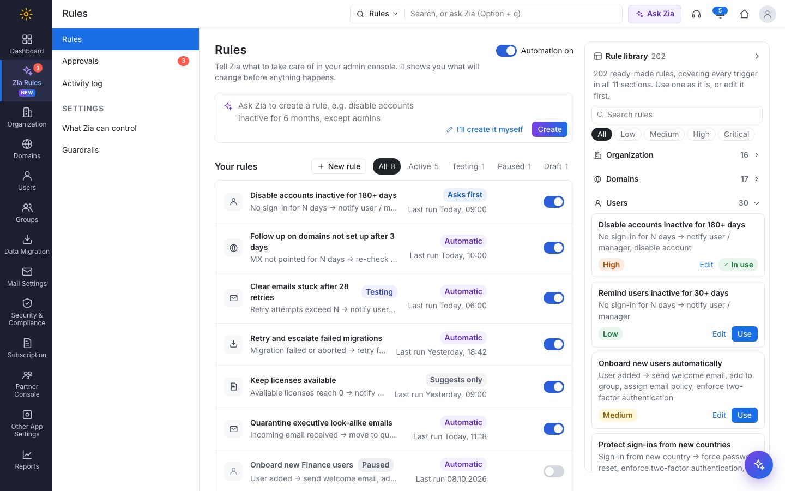
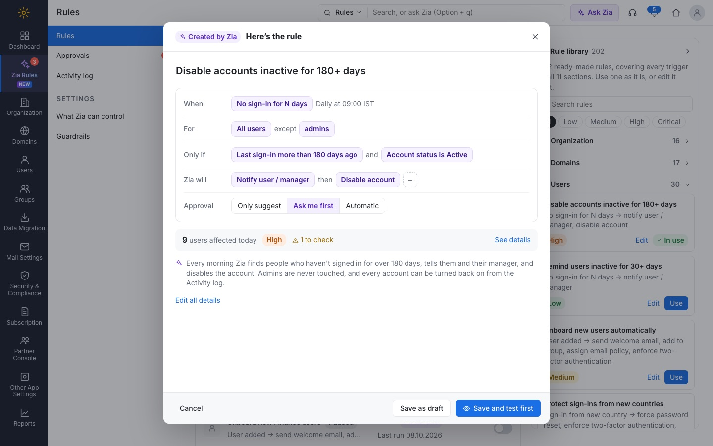
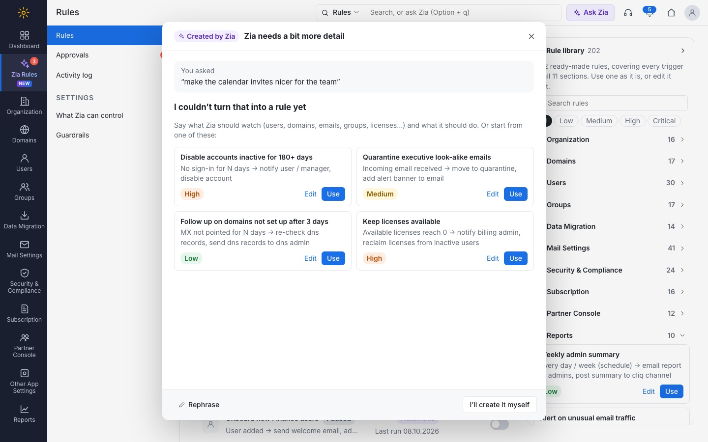
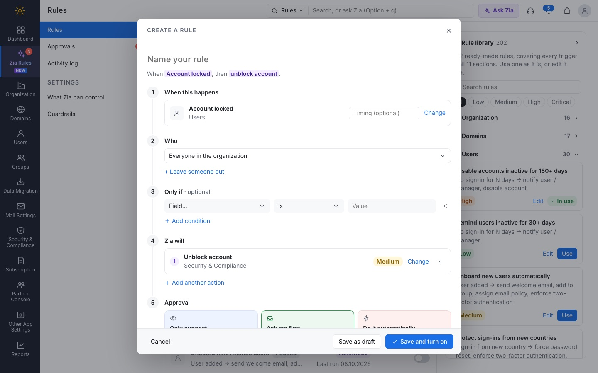
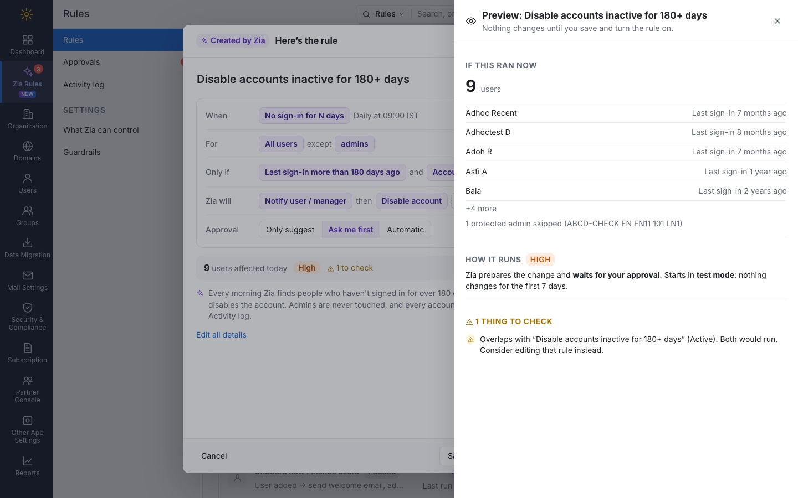
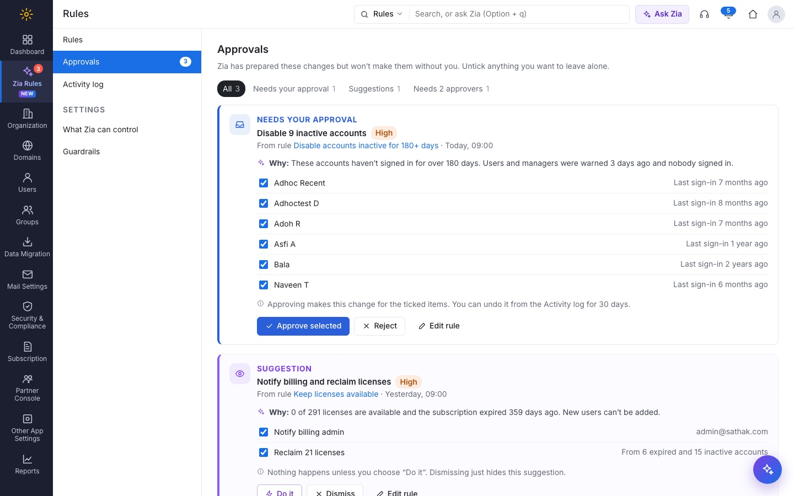

Admins look after users, domains, mail flow, security and billing, and much of that work repeats every day. Zia Rules lets an admin describe what to take care of in plain words, or build the rule themselves. Zia shows exactly what would change before anything happens.

The admin console already has several ways to automate things: incoming rules, outgoing alerts, email policies and restrictions. Each one lives on its own page, uses its own terms and covers one area. Everything outside them is done by hand, screen by screen.
The test organization I designed against shows what builds up when nothing is automated:
domains still waiting for MX or SPF records.
licenses free, with expired accounts still holding licenses.
security score, with 6 recommended controls not turned on.
data migrations aborted and never retried.
emails stuck in the retry queue after 28 attempts.
outgoing alerts switched off.
None of these is hard to fix. Admins just have to notice them, remember them and keep up with them. The goal was to let an admin say “take care of this” once, and stay in control of anything risky.
The page opens with a single Ask Zia field. Inside it sits an I’ll create it myself button, so admins who don’t want AI aren’t pushed into it. Early versions had two equal tabs and a large form always open, and the page felt crowded. Showing only the field first kept the page calm.
When Zia builds a rule, the admin doesn’t get a form to check line by line. They get a short summary: When, For, Only if, Zia will and Approval, with each value as a tag they can click to change. A one-line explanation says why Zia built it that way. The full form is one click away for anyone who wants it.

A confident but wrong rule is worse than no rule. When the request doesn’t map to anything the console can do, Zia says so, explains how to phrase it, and offers the closest ready-made rules. It never guesses.

The manual form uses the same five parts as Zia’s summary, as numbered steps. Triggers and actions come from searchable lists grouped by section, not long dropdowns. The rule reads back as a sentence as you fill it in. The popup stays fixed in place while you type, and an action can’t be added twice.

A blank form is hard to start from. The Rule library sits beside the page with 202 ready-made rules across all 11 sections, so every trigger has at least one example. Each rule can be used as it is, or edited first. Search and risk filters keep a long list easy to scan.
Every rule is checked against the organization’s real data before it is saved. The preview shows the exact users, domains or emails it would touch today, how it will run, and anything to check. That includes protected admins being skipped and overlap with an existing rule.

Each action has a risk level, and the admin picks how much Zia may do on its own. The three choices have their own colours, so the difference is clear at a glance.
Zia points out the problem. The admin decides what to do.
Zia prepares the change and waits in Approvals.
Zia acts within the guardrails and reports back.
Three kinds of request end up in Approvals: a change that needs a yes, a suggestion, and a critical change that needs two people. In the first version they looked the same, and they were easy to confuse. Each now has its own label, colour, button and a one-line note about what happens next. Admins can untick individual users before approving.

I mapped every screen of the admin console from screenshots first: each setting, list and action. That list became the catalog of what Zia can watch and do: 112 triggers and 111 actions across 11 sections. Then I built a working prototype and refined it over many quick rounds: cutting clutter, merging creation and the rule list into one page, and trying a step-by-step wizard. I went back to the single-page form because it was faster to scan.
This is a working concept prototype using sample data from a test organization. Zia’s understanding of plain language is simulated with keyword matching, and changes are kept in the browser. Next steps: